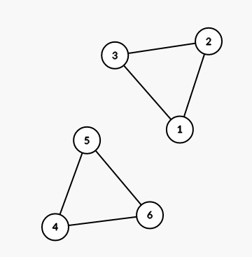
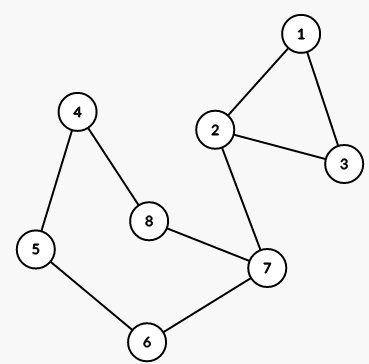

You are given an undirected graph with n vertices. There are no edge-simple cycles with the even length in it. In other words, there are no cycles of even length that pass each edge at most once. Let's enumerate vertices from 1 to n.
You have to answer q queries. Each query is described by a segment of vertices [l; r], and you have to count the number of its subsegments [x; y] (l ≤ x ≤ y ≤ r), such that if we delete all vertices except the segment of vertices [x; y] (including x and y) and edges between them, the resulting graph is bipartite.
The first line contains two integers n and m (1 ≤ n ≤ 3·105, 1 ≤ m ≤ 3·105) — the number of vertices and the number of edges in the graph.
The next m lines describe edges in the graph. The i-th of these lines contains two integers ai and bi (1 ≤ ai, bi ≤ n; ai ≠ bi), denoting an edge between vertices ai and bi. It is guaranteed that this graph does not contain edge-simple cycles of even length.
The next line contains a single integer q (1 ≤ q ≤ 3·105) — the number of queries.
The next q lines contain queries. The i-th of these lines contains two integers li and ri (1 ≤ li ≤ ri ≤ n) — the query parameters.
Print q numbers, each in new line: the i-th of them should be the number of subsegments [x; y] (li ≤ x ≤ y ≤ ri), such that the graph that only includes vertices from segment [x; y] and edges between them is bipartite.
6 6
1 2
2 3
3 1
4 5
5 6
6 4
3
1 3
4 6
1 6
5
5
14
8 9
1 2
2 3
3 1
4 5
5 6
6 7
7 8
8 4
7 2
3
1 8
1 4
3 8
27
8
19
The first example is shown on the picture below:

For the first query, all subsegments of [1; 3], except this segment itself, are suitable.
For the first query, all subsegments of [4; 6], except this segment itself, are suitable.
For the third query, all subsegments of [1; 6] are suitable, except [1; 3], [1; 4], [1; 5], [1; 6], [2; 6], [3; 6], [4; 6].
The second example is shown on the picture below:
